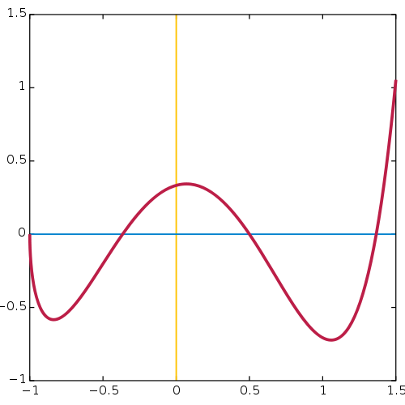
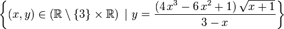

Programmers Need New Tools to Manage Growing Systems
The Computer Ecosystem of Today:
-
Multicore
 There's lots and lots of them...
There's lots and lots of them...
To avoid Armageddon, you should plan to
... actually, it's not that bad, but things are moving rapidly, and you should know what's coming up for software developers.
We tend to forget this, but once upon a time, most development was done in assembly.
Think GOTOs and Line Numbers
Dijkstra's paper "GOTO Considered Harmful"
Introduced if...then...else, while
Functions and subroutines
Objects, classes, polymorphism
Patterns, antipatterns
Dynamic and static dispatch
Unprecedented scalability
Uncontrolled Systemic Complexity
Pentium II 350 MHz CPU
64MB RAM
Fujitsu 3.2 GB EIDE Hard Drive
Diamond Viper Video Card - If you play DOOM a lot...
8x CD ROM
Dial-up 28,800 Baud modem (twice as fast as 14,400 baud!)
You pray that no one else in the house picks up the phone while you're surfing Compuserve
Smart Phones are dual core, wifi enabled
Constant connection to the internet, often at 100 Mbps or more
International Video Chatting is Normal and Free (!)
TB+ Hard Disks are challenging the old "Windows Based" UI
The Windows-style "Start Menu" no longer makes sense.
All Major Vendors are switching to a more easily searchable UI
Windows 8 Metro, Ubuntu Unity, Gnome 3...
Multicore
Intel Xeon E7-8800 - 10 cores
Tilera GX - 100 cores
The Azul Vega 3 - 768 cores
There's lots and lots of them...
Obviously, with that many cores parallelism and concurrency are going to be huge concerns.
Javascript, CoffeeScript - the gateway drugs. (JQuery makes heavy use of FP)
Erlang - created by Ericsson. Supports massive concurrency. Used a lot in telecommunications.
Python, Ruby, Groovy - other "scripting" languages
Scala, Clojure, F#, LINQ
Haskell - the nerdy kid with thick glasses
It has been around for a long time - LISP dates back to 1950
Based on lambda calculus
Functions are first-class values
Iteration is accomplished through recursion rather than looping
Can get very theoretical
int sum = 0;
for (int x=1; x <=10; x++) {
sum += x;
}
sum = foldr (+) 0 [1..10]foldr, taken directly from GHC's source:
foldr :: (a -> b -> b) -> b -> [a] -> b
foldr k z = go
where
go [] = z
go (y:ys) = y `k` go ysOur hypothesis was that if we wrote our software in Lisp, we'd be able to get features done faster than our competitors, and also to do things in our software that they couldn't do. And because Lisp was so high-level, we wouldn't need a big development team, so our costs would be lower.... Somewhat surprisingly, it worked.
Paul Graham, founder of Viaweb, which was acquired and became Yahoo Shopping
Protip: It helps to have a Ph.D. in Computer Engineering from Harvard, and to have already written the definitive book on the language in question.
[Haskell] allowed us to write a powerful and fast webserver in about 500 lines of code.
Michael Snoyman, lead developer of Yesod, a Haskell Web Framework
Polymorphically Statically Typed
Lazy
Purely Functional
Natively compiled -- combined with static typing, this gives it very good performance characteristics
Its main compiler is the Glasgow Haskell Compiler
ghc -- the Haskell compiler
ghci -- the Haskell interpreter (or REPL)
public int addThings(int a, int b) {
return a + b;
}
But elsewhere in your system is code that has the ability to launch a first-strike nuclear attack on Alabama.
Is there any way to prevent a programmer from coding the evil function into your addition function?
// Answer: NOPE
public int addThings(int a, int b) {
EvilClass.nukeAlabama();
return a + b;
}
a
and b will make it through your function unmolested.
public int addThings(int a, int b) {
a = -2000000;
b = HEH_HEH_UR_MOM;
return a + b;
}
Unless you add the keyword final on all your parameters, which most of us never do.
And this situation is even worse in Javascript, Ruby, Python, etc., where you can't guarantee that the values returned will even be integers
addThings() even be called a "function"?

Input and Output (both "show this on the screen" and "launch the nukes")
Random Numbers
Any mutable state whatsoever

Demos
A list of natural numbers:
-- We've already seen 1 through 10
[1..10]
-- Here's a list of *all* natural numbers
[0..]
fiblist = 0 : 1 : zipWith (+) fiblist (tail fiblist)
This generates a potentially infinite list. Already-calculated values are retained in memory so they don't have to be recalculated.
in Haskell there is a significantly lower emphasis on unit testing and a greater emphasis on using the type system and equational reasoning to prove your program is correct. Unit tests are a good starting point until you can prove your program is correct, but once you do that they are pretty much a formality
"Tekmo," in a comment on Reddit.com
>let i = 3 :: Int -- the '::' is the type indicator
>let j = 3 :: Integer
>i + j
<interactive>:9:5:
Couldn't match expected type `Int' with actual type `Integer'
In the second argument of `(+)', namely `j'
In the expression: i + j
In an equation for `it': it = i + j
The type system itself is a deductive system, capable of producing proofs.
Types can themselves take types, which is one of the things that make monads confusing.
Types can also be algebraic.
data Color = Red | Blue | Green | Grey | Brown | KindaPukeyAqua
deriving Show
You can optionally add fields or records to your data constructors.
data Point = Point Int Int -- Point now has to be declared with an x and y
data Vec3 = Vec3 a a a -- Parametric (polymorphic) types
data Shape = Point { x :: Int, y :: Int }
| Square { topLeft :: Point, length :: Int}
| Circle { center :: Point, radius :: Int }
| Emptiness
deriving Show
I can now pattern-match on my Shape type, and do a lot of other fun things.
But one thing I cannot do is declare a Shape of type Ellipse (unless, of course, I add and Ellipse to Shape).

This barely scratches the surface of what's possible with the type system. To fully cover all the possibilities opened up by the type system in Haskell would take weeks.
public boolean transferMoney (Account fromAcct, Account toAcct, DollarAmt amt,
long timeout, TimeUnit unit)
throws InsufficientFundsException, InterruptedException {
long fixedDelay = getFixedDelayComponentNanos(timeout, unit);
long randMod = getRandomDelayModulusNanos(timeout, unit);
long stopTime = System.nanoTime() + unit.toNanos(timeout);
while (true) {
if (fromAcct.lock.tryLock()) {
try{
if (toAcct.lock.tryLock()) {
try {
if (fromAcct.getBalance().compareTo(amount) < 0) {
throw new InsufficientFundsException();
} else {
fromAcct.debit(amount);
toAcct.credit(amount);
return true;
}
} finally {
toAcct.lock.unlock();
}
}
} finally {
fromAcct.lock.unlock();
}
}
if (System.nanoTime() < stopTime)
return false;
NANOSECONDS.sleep(fixedDelay + rnd.nextLong() % randMod);
}
}Taking too few locks. You forget to take a lock and two threads end up overwriting data.
Taking too many locks. Your system slows to a crawl, a situation known as thread starvation.
Taking the wrong locks. You lock out an unrelated thread while your thread blithely creates a race condition.
Taking locks in the wrong order. Suddenly you have what's known as the Dining Philosophers problem. Two locks just sit there and say "After you... No, after you... I insist, after you..."
Backing out of the inevitable errors. It's difficult to guarantee that concurrent transactions are truly atomic. Very easy to leave a system in an inconsistent state.
In our bank account example, I cannot compose a transfer operation out of individual thread-safe withdraw and deposit operations. If I need to disburse money to a hundred accounts, I need locks on every account. The intermediate state, where I've pulled money from account #1 but not yet deposited it in accounts #2 through #101 is practically impossible to hide from external threads.
Java's concurrency implementation is today's version of GOTO BASIC and spaghetti code.
Concurrent operations would be an all-or-nothing affair. Data would never be left in an inconsistent state
Data would never be left in an inconsistent state
Race conditions are disallowed. Operations by separate threads look like they happened within the same thread. (Easier to reason about your system this way.)
It is durable, prone to recovery after errors.
I'm looking for the same level of transactional control within the language's runtime itself, and here's where Java falls down.
import Control.Monad
import Control.Concurrent.STM
type Account = TVar Int
credit :: Int -> Account -> STM ()
credit amount account = do
current <- readTVar account
writeTVar account (current + amount)
debit :: Int -> Account -> STM ()
debit amount account = do
current <- readTVar account
writeTVar account (current - amount)
transfer :: Int -> Account -> Account -> STM ()
transfer amount from to = do
fromVal <- readTVar from
if (fromVal - amount) >= 0
then do
debit amount from
credit amount to
else retry -- in real life, we'd wrap a
-- timeout around this
newAccount :: Int -> STM Account
newAccount balance = newTVar balance
transferTest :: STM (Int, Int)
transferTest = do
ac1 <- newAccount 20
ac2 <- newAccount 30
transfer 5 ac1 ac2
liftM2 (,) (readTVar ac1) (readTVar ac2)
main :: IO ()
main = do
(amt1, amt2) <- atomically transferTest
putStrLn $ (show amt1) ++ ", " ++ (show amt2)We just implemented a threadsafe function without locks, and without relying on an external system.
This code isn't perfect. (Ideally we'd want timeouts and exceptions, which are available in Haskell.)
But it is a lot cleaner than the Java alternative.
/
#